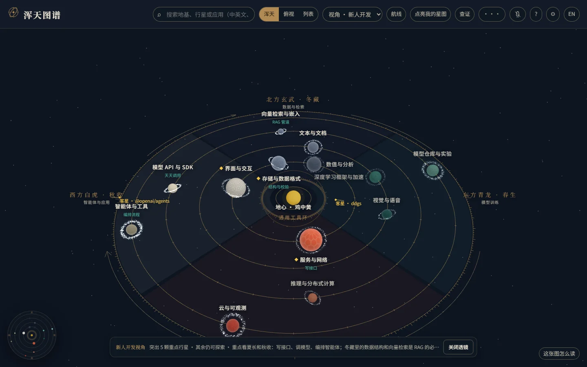
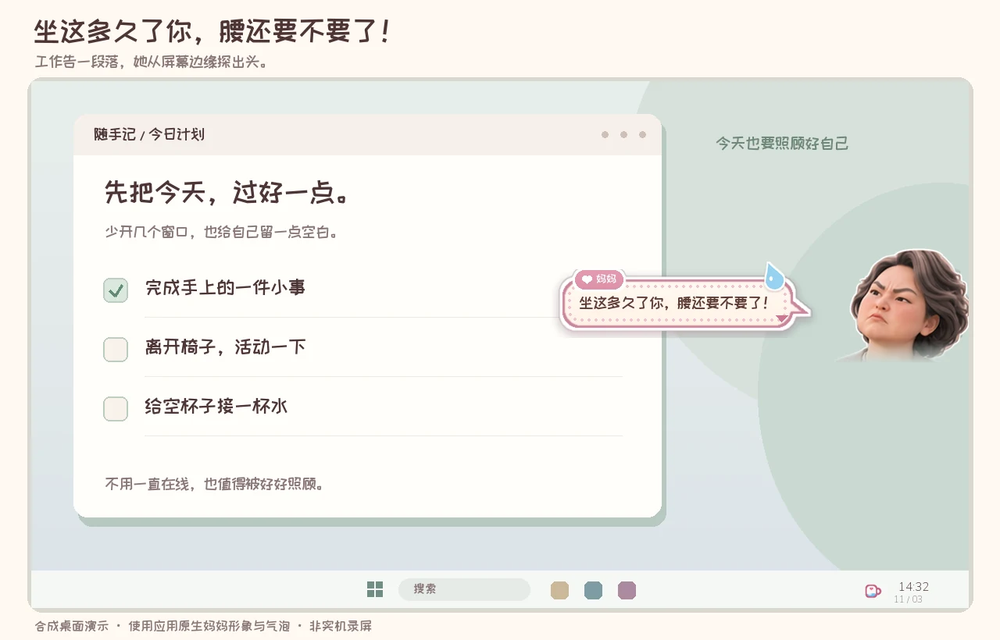

原项目总览截图 · 第五轮 CURIOUS BY DEFAULT. BUILDER BY CHOICE.VOL. 01 — 2026
INPUT → INSIGHTS↗︎MAKE IT REAL.
01 / DISCOVER02 / BUILD03 / LEARN++SYSTEM: ALWAYS EVOLVING
↳ TURN NOISE INTO SIGNAL
↳ TURN NOISE INTO SIGNAL
PRODUCT THINKING × HANDS-ON MAKINGSCROLL TO EXPLORE ↓
01 / SELECTED WORK四个项目，四种把想法落地的方式。
学习回路 Learning Loop
把“收藏了很多”变成“今天真的练了一题”。
一次从静态题库到持续学习系统的产品演进。
THE LEARNING LOOPDESKTOP SYSTEM / 2026
● ● ●signal / pipeline↗︎
✓ discover learning signals
✓ validate knowledge contracts
→ make room for practice_
THINK FIRST. REVEAL LATER.先别看答案。
先别看答案。
用自己的话，说一遍。
90 SEC
开始一次主动回忆 ↗︎
素材 → 知识 → 表达界面为案例展示重绘
悉尼约会助理 Sydney Date Scout
只推“值得为它安排一次约会”的活动，宁可少推，不凑数。
真实运行三个月后，用数据推翻了自己的评分表。
SYDNEY DATE SCOUTDESKTOP RECOMMENDER / 2026
$score(event, rubric)
#no batch context, no ranking
→threshold 68 · fixed_
采集 → 评分 → 赴约按产品配色重绘 · 数据来自真实批次
大水理论最严厉的母亲The Strictest Mom
把妈妈请进电脑，催你喝水、起身。把出现的时机、角色的性格与后台资源一起设计。

合成桌面演示 · 非实机录屏[ NEXT COMMIT ]
为下一个值得解决的问题，留一个位置。
更多项目将陆续归档 ↗︎02 / HOW I THINK从提问到交付。
让系统复杂一点。
让使用简单一点。
我对产品的兴趣，在那些不起眼却决定体验的地方：什么时候提醒，什么时候沉默，什么应该自动化，什么必须留给人判断。
先找到真正的摩擦
“缺少知识”可能只是表象。每天是否愿意打开、能不能开始，才是产品要面对的问题。
把取舍写进系统
给自动化划边界，让数据有归属。好的架构，应该能解释为什么这样做。
用证据持续修正
代码跑通是开始，用户得到价值才是目标。把已完成、未验证和下一步分开讲清楚。
03 / THE PERSON BEHIND THE PROJECTS你好，我是
你好，我是
张书焓↗︎
也可以叫我 Soran。
喜欢追问“为什么”，也喜欢动手回答。
这个网站记录我从真实需求出发，借助 AI 把想法落地的过程。这里展示产品本身，也展示背后的判断、返工与尚未解决的问题。
比起列一串工具名称，我更愿意让一个完整项目，说明我是如何思考和做事的。
从第一个项目认识我 ↗︎